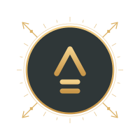
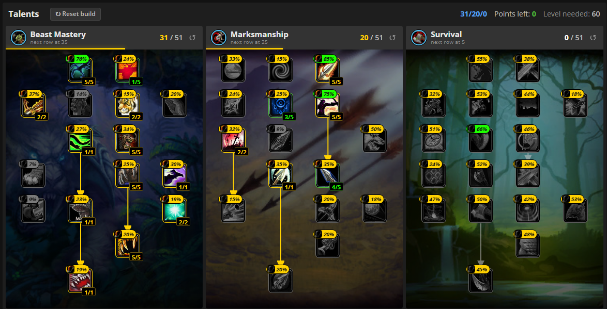
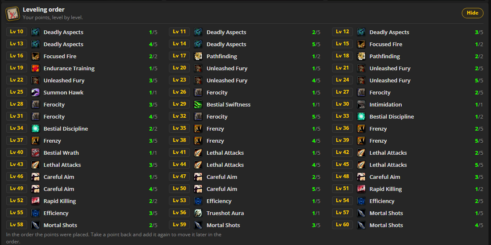

Recomendada nivel 22
Blackfathom Deeps
Ashenvale
La primera parada en serio. Llego con las misiones de Darkshore y Ashenvale recogidas.

WoW Forever · Night Elf Hunter
Por dónde voy a subir, qué bichos voy a tamear para aprender Bite y Claw, qué mazmorras intentaré hacer y con qué talentos.
Es lo que voy a hacer yo de salida. Seguramente no es la ruta más rápida ni la mejor build, solo el plan con el que empiezo. Está montado con datos de la beta, así que cambiará en cuanto el juego salga y vea cómo va.
Zona a zona, con lo que tameo en cada una y el establo donde lo hago. Donde pone "hasta", es el nivel mínimo al que me quedo antes de moverme. Los nombres subrayados llevan a Wowhead.
En cuanto tenga Tame Beast, ronda de caza antes de irme de la isla.
Solo misiones. Voy recogiendo las de Blackfathom Deeps.
Si Drywallow Snapper no enseña Claw 5, me lo salto y cojo Claw 6 en Tanaris.
Vuelo desde Tanaris a Theramore, hago la mazmorra con sus misiones y vuelvo.
Los rangos de Bite y Claw que voy a ir aprendiendo. El número de debajo es el nivel que necesita la mascota para usar ese rango.
* Sin confirmar con los datos de la beta. Bite 8 depende de que el Bloodaxe Worg siga en LBRS y lo enseñe.
Mis dos mascotas fijas. El número es su velocidad de ataque en segundos: cuanto más baja, más pega.
En Forever la XP buena de las mazmorras está en sus misiones, no en los mobs, así que la idea es entrar una vez con todas las misiones cogidas. Estas cuatro me pillan de camino.
La primera parada en serio. Llego con las misiones de Darkshore y Ashenvale recogidas.
Una de las mazmorras nuevas de Forever. Tiene 9 jefes, así que toca reservarle tiempo.
Está dentro de la zona donde paso del 40 al 50. La que mejor encaja de toda la ruta.
Escapada desde Tanaris volando a Theramore. Recojo las misiones de camino y vuelvo.
Beast Mastery para que la mascota y los halcones hagan el trabajo, con 20 puntos en Marksmanship para rematar.


El leveo, en directo en Twitch
Ver SevenEleven_tv en Twitch